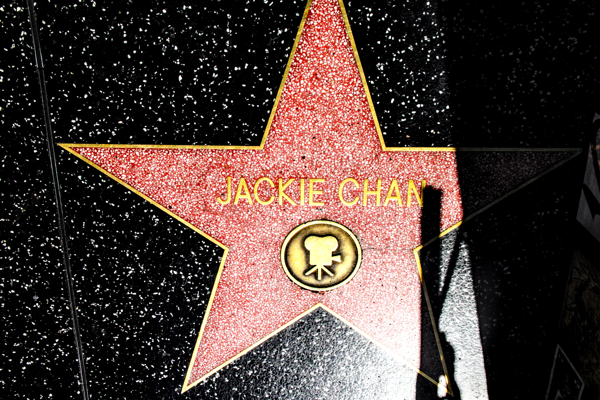

从韩国回美国很快过去了半年。
说来尴尬，身为程序媛来美国这么多年我竟从未染指加州一带， 最接近的一次也是上次冬季跑到了死亡谷。原本想顺脚去优胜美地逛一逛， 可惜优胜美地有一条可以横穿的路冬季关闭，故而我们只能与之惜别。
生日是在八月底，抓住夏天的尾巴，挑来挑去旅行就定在了加州。 一号公路自然是不能放过，优胜美地亦是重点照顾对象之一， 囿于时间的限制，最终路线是洛杉矶——优胜美地——圣何塞， 最后一号公路回到洛杉矶。
好莱坞篇
不同于曼哈顿高楼的零次栉比，华盛顿白宫的肃穆安详， 波士顿校园的人文气息，洛杉矶是一个和我的期待并不差很远的， 普通大城市。而唯一特别一些的，自然是好莱坞。
停在星光大道附近的停车场，顺着一个个被时光打下印记的名字一直走到 好莱坞标志，合照，留念，走人，一气呵成。
星光大道是一个怎样的地方呢？世界各地的游客相聚于此， 寻找他/她喜欢的演员/导演/歌者等曾经被认可的痕迹。
例如：疯狂为成龙点赞的我。
优胜美地篇
可能是优胜美地的名字太好听，抑或是名声太响，再加上由于我过于懒惰 还经历了食物中毒，对优胜美地其实是没有期待的那么好。新娘面纱瀑布 那犹如火焰倾泻的照片确实是可遇而不可求，缺少那一抹斜阳，也不是 极佳的季节，和大瀑布实在是差了许多。南部开发的比较好，观景点选择多 视野也好，既可以平地一览峡谷全景，也可以从山顶鸟瞰。虽然确实没有 照片中那些惊艳的感觉，作为一个树影斑驳的夏日午后，这已经足够慵懒舒适。
北边是我执意要去的，毕竟上次的遗憾就是这里。相比南边的草长莺飞， 我更喜欢北边清清冷冷的气质。
此处要添加一个小插曲。第一天逛完南边，贫穷如我们我们选择住在了公园外边， 然而我懒癌发作吃了一只在车上放了一天的烤鸡， 结果食物中毒折腾到早上四五点才终于虚脱到睡着。 第二天上山后逐渐有些呼吸发力，稍微走一点容易头晕， 我还安慰自己是前一天后遗症所以稍微动一动会感觉恶心。 胸口的感觉就是一直有个小石头压着，并不阻碍呼吸但略有不顺畅。 当时我甚至坚持走了个trail，走十几米停五分钟，内心还调笑自己终于有天不再 硬妹堪比林黛玉。由于一直不舒服，下午四五点就在游客中心买了冰淇淋然后 收拾收拾出发去旧金山。直到下山之后不适感完全消失，我才后知后觉的发觉原来我可能是高原反应了， 并且庆幸自己由于太虚弱并没有像以往一样努力做死。（笑死）
意外之喜是由于出发的早，还可以沐浴着夕阳在荒野中的公路一路飞奔， 尽享road trip的快乐。
谷歌篇
旧金山感觉会很堵就没有进城直接去了Mountain View。我室友在圣何塞实习， 于是约好了一起吃晚饭。而经历了洛杉矶中国城中餐的下马威，在优胜美地成功 食物中毒的我，终于迎来了本次旅行中吃的最好的一天。
中午去了阿拉上海，小笼汤包加生煎的快乐，当场差点吃撑。 逛完斯坦福后一路开去圣何塞吃了东北菜， 北方人的热情好客全都体现在了食物的分量上。
有什么是连食物都比不过的在那天的光芒呢？是身为程序媛的我的灵魂期待：
谷歌。
进门前先拍照留念，还有不能错过的谷歌小车
吃饱喝足后我可爱的室友的同事还带着我们去了mountain view本部， 向我们介绍谷歌核心区域与他在这里的种种趣事，还有激萌的安卓小公园。 有生之年终于参观了一次谷歌，一本满足。
一号公路篇
午餐是在一个海边小镇解决的，典型的美国小镇，慵懒安静。 似乎是因为旅游而知名的样子，旅馆酒吧潮牌艺术馆应有尽有，但并不喧嚣。
午餐是在一个海边小镇解决的，典型的美国小镇，慵懒安静。 似乎是因为旅游而知名的样子，旅馆酒吧潮牌艺术馆应有尽有，热闹但并不喧嚣。
出发不久时还有些担心下雨，天色并不明朗，在大陆边缘远眺，远处的岬角被云雾笼罩， 竟莫名有些水墨意境。
中途还参观了被大力安利的海边州立公园，真的不会后悔。
大概就是这样的不会后悔。
彼此拍了不少照片 233333
不愧是被吹爆的一号公路，随手拍都是一张屏保。
眼看着奖金日落，随手拐进了高速边上的观景停车区域，在寒风中瑟瑟发抖, 艰难地拍下了落日余晖。
谢谢你。在我生日这天，陪我在这大陆的最西边，共赏落日。